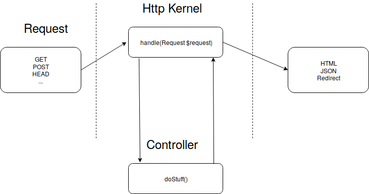
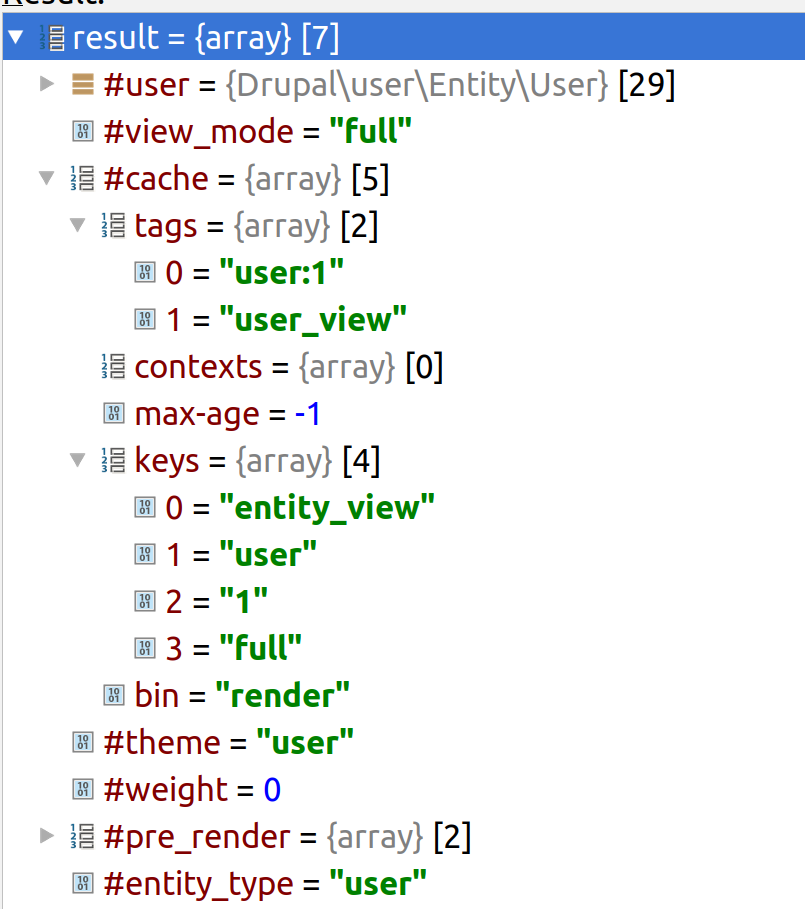
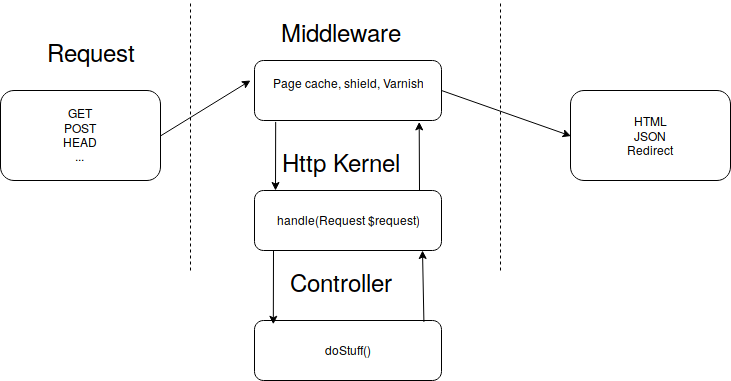

Caching in- and outside of Drupal 8
bit.ly/ffwbg-cache
Slides are hosted on github, press 's' if you want to read speaker notes too.
Agenda
Cache types
Metadata
Default settings and how to change them
Using external caches
Why Varnish?
(if we have time) Beyond basics: caching for authenticated users
Q&A
Default setup
Internal page cache
Internal dynamic page cache
Beware: devel module
Beware: development.services.yml
Request life cycle

Cache types
Response cache
Render cache

Cache metadata
Tags: dependencies on data managed by Drupal, like entities & configuration
Contexts: variations, i.e. time zone, language preferences, user agent
max-age
Request revisited

Who said this can happen only inside Drupal?
Questions?
bit.ly/ffwbg-cache
Cache guide on drupal.org
Caching-related videos on Drupalize.me